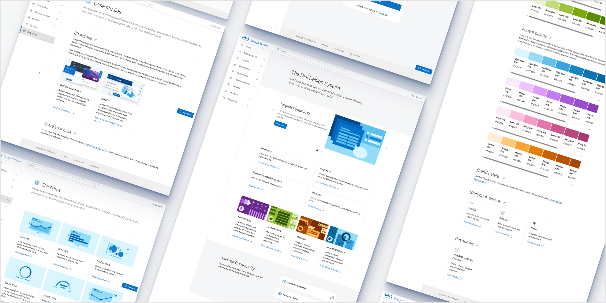
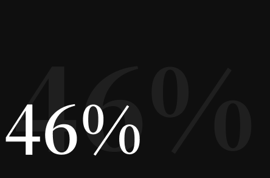
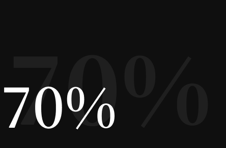
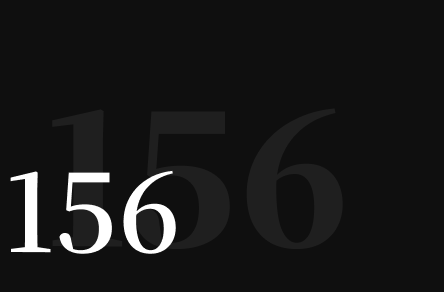
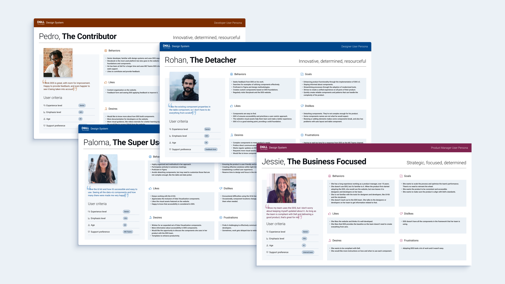

I lead an international team at Dell Technologies that's focused on building and improving the Dell Design System Website. We dive deep into user research, using methods like usability testing, tree testing, analytics, and user persona studies to make sure our designs actually solve user problems. A big part of what we do is expanding and documenting the Dell Design System website, with a special focus on making the UI smoother and improving the overall user experience.
The product: Dell Design System
The Dell Design System website is a key resource that offers guidelines, tools, and best practices for creating consistent and user-friendly experiences across Dell’s digital products. It covers core principles like simplicity, accessibility, and scalability, and includes detailed UI components, design patterns, and data visualization to help teams maintain consistency.

Over the past 4 years, the website has evolved significantly. Initially, it had limited components and lacked features like data visualization and case studies. Since then, we’ve made continuous improvements based on user research—such as usability tests, card sorting, workshops, and user interviews—and tracked its adoption through Adobe Analytics. As a result, adoption has increased by 46% from 2023 to 2024, with 156 teams now actively using the system.

Increase in adoption from 2023 to 2024
Latest measurements

Reduction in design and development time
Latest measurement

Applications at Dell using DDS
Latest measurement
DDS V1 vs. DDS V2 websites
Leadership at the DDS team
Along with expanding the design system, I focus on attracting top talent and promoting a culture of learning. I mentor designers at all levels, helping them grow their skills and contribute to projects. As a leader, I prioritize understanding each person’s strengths and motivations to foster creativity and achieve the best outcomes.
My responsibilities include:
Supporting and guiding the team to ensure timely delivery, helping designers complete their tasks on schedule.
Managing and enhancing team performance to maximize overall productivity.
Planning of the year’s activities through user research methodologies, ensuring alignment with team objectives and project goals.
Supporting and guiding
In this role, I supported and guided the UX/UI team through a balance of strategic oversight, process management, and effective communication. Key strategies I employed included:
Clear Communication & Collaboration: I fostered open communication across designers, developers, and stakeholders, holding regular 1:1 meetings and conducting feedback sessions every six months to ensure alignment and progress.
Setting Realistic Milestones: I broke down projects into manageable tasks, prioritized them based on impact, and determined timelines in sprints. Adjustments were made as needed to prevent delays.
Fostering a Collaborative Culture: I promoted cross-team collaboration and knowledge-sharing, which helped improve team efficiency and accelerate skill development. This included holding regular critiques with the whole team and daily syncs to keep everyone on the same page.
We have a daily design sync with the Dell Design System team, and it’s quickly become one of my favorite meetings. We start with some casual conversation to break the remote work routine and feel more connected. After that, team members share their work and get feedback. We also collaborate on components, debate design decisions, and break down tasks. At first, not everyone attended, but over time, the team started showing up daily. Now, it’s a meeting everyone looks forward to. It’s a great space for learning, getting feedback, and making decisions together, which has helped us grow both individually and as a team. Regular design syncs turned out to be the single most powerful catalyst for higher quality designs.
Managing and boosting the performance of a product design team is all about finding the right balance between getting great work done and helping team members grow. It's about offering mentorship, encouraging people to take ownership of their tasks, and creating a supportive atmosphere where everyone can improve. I implemented a structured approach that involved multiple key strategies:
Skills Analysis Workshop: I conducted a workshop to assess the team's UX/UI skills using a visual skill matrix. We focused on identifying individual strengths and growth opportunities.
Setting Clear Goals & Development Plans: Based on the workshop outcomes, I created personalized learning plans, focusing on training, mentorship, and knowledge sharing.
Task & Role Alignment: I ensured team members were working on tasks that matched their strengths and growth aspirations.
I played a key role in planning the year’s activities, using user research to align our work with team goals and project needs. I centralized all our research—like usability tests, user interviews, and analytics—into one place for easy access, helping the team make better decisions. We also ran workshops and conducted 25 interviews to create detailed user personas, which gave us insights into user needs and pain points. With these insights, we prioritized tasks based on impact and effort, ensuring we focused on the most valuable improvements and used our resources effectively.
We also ran workshops and conducted 25 interviews to create detailed user personas, which gave us insights into user needs and pain points. With these insights, we prioritized tasks based on impact and effort, ensuring we focused on the most valuable improvements and used our resources effectively.
User Value Scale of features

Some of the DDS User Persona
Conclusion
Leading the Dell Design System team has been all about constant growth—both for the system and for the people I work with. From improving the website’s user experience to building a culture of learning and teamwork, we’ve been able to take the Design System to new heights and create a space where our team can thrive. As we move forward, we’ll keep leaning on research, staying flexible, and making sure we’re building solutions that not only work for our users but also inspire our teams to do their best work.


{kind=link}
{kind=link}
{kind=link}
{kind=link}
{kind=link}